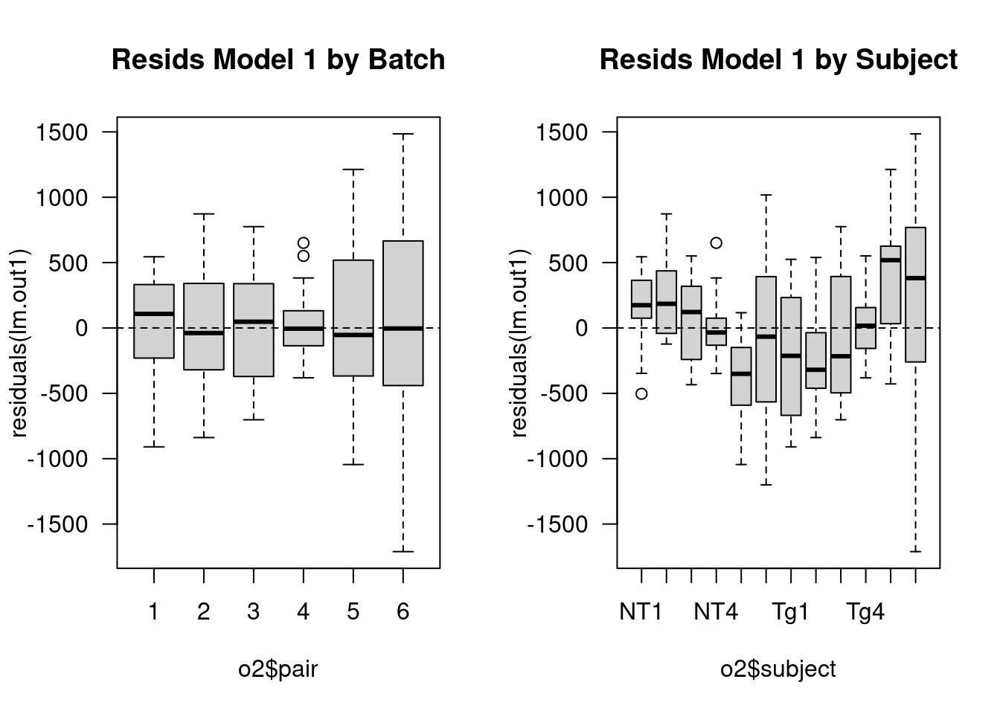
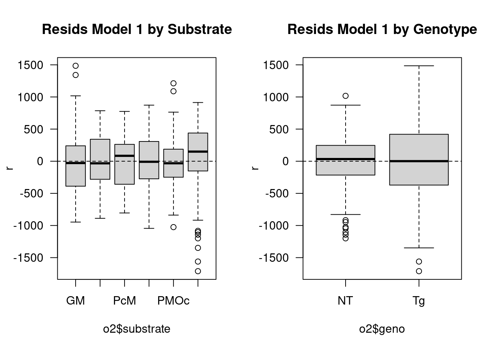
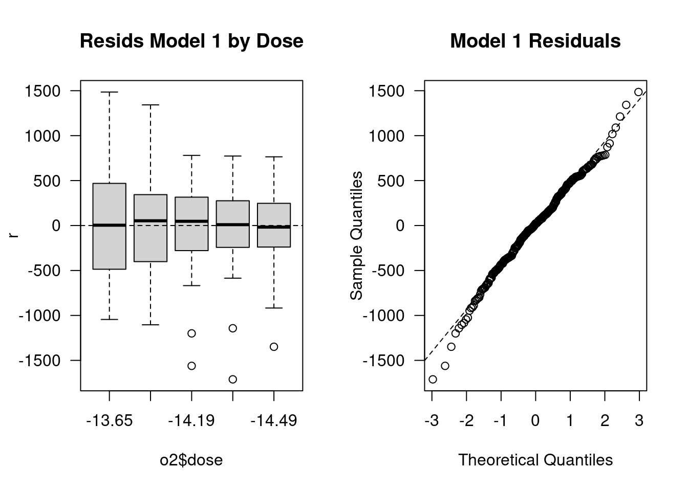
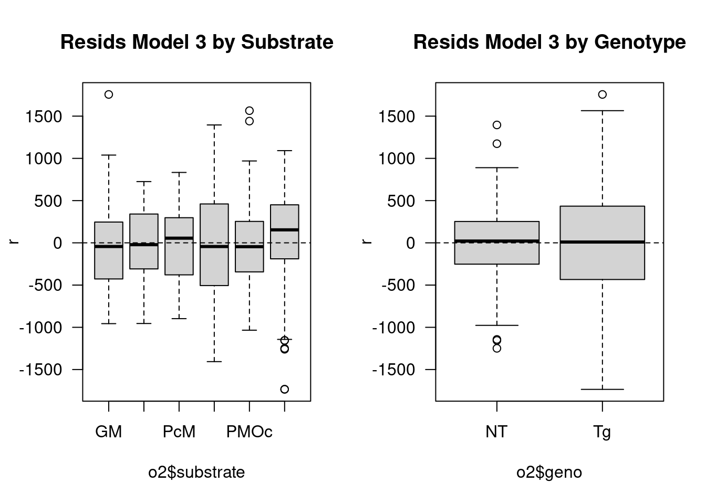
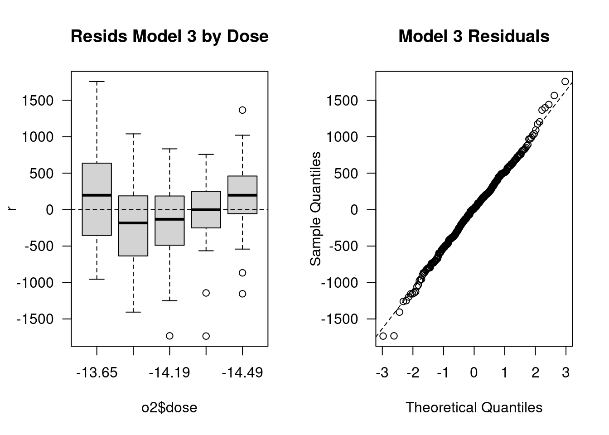
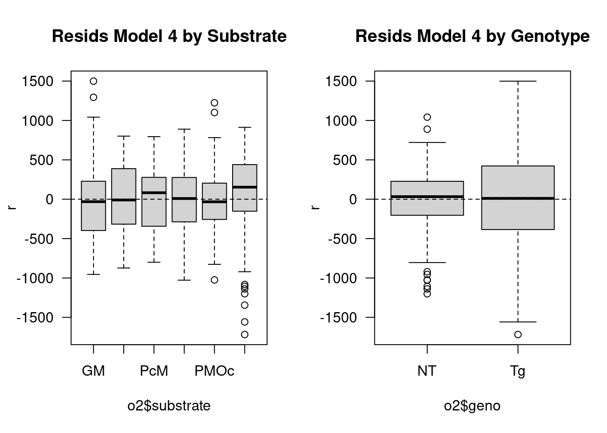
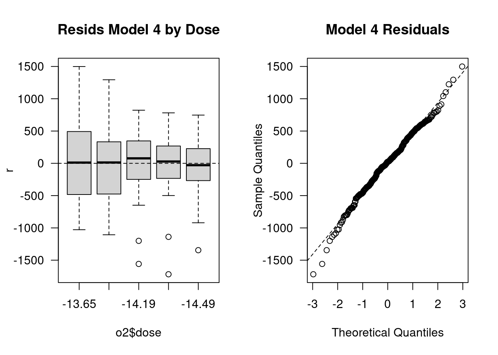

library(tidyverse)
library(mgcv)Multiple regression
STA613
Follow along
Access data and scripts here: https://duke.is/sta613-fisher
Libraries
In these notes, we use the following libraries:
Data: metabolic assays
Data come from Fisher-Wellman et al. (2018). Major goal: bridge the gap between molecular signatures and functional mitochondrial bioenergetics by directly measuring mitochondrial energy flux.
- Skeletal muscle mitochondria are isolated from either the NT or Tg mice and the same pool of mitochondrial suspension is used for JO2, dPsi, Redox, and e-1 Leak measures.
- Each of the 6 substrates (GM, PM, PMPc, PMOc, PcM and OcM) assesses the performance of various metabolic pathways.
- You can think of each assay as a type of “dose-response” curve where varying the \(\Delta\)G\(_{\mathrm{ATP}}\) (-12.95 through 14.49) is like a dose.
JO2measures Flux of Oxygen; indicator of how much “work” the mitochondria are capable of performing under a given fuel condition and energy charge.
Load data
o2 <- read_csv("../data_s/o2.csv")
o2$dose <- factor(o2$dose, levels = c(-13.65, -13.95, -14.19, -14.36, -14.49))
o2$pair <- as.character(o2$pair)Exploratory data analysis
Take a look at the data:
glimpse(o2)Rows: 340
Columns: 7
$ y <dbl> 11946.57, 13218.91, 12843.75, 13296.75, 11647.96, 11642.01, …
$ substrate <chr> "GM", "GM", "GM", "GM", "GM", "GM", "GM", "GM", "GM", "GM", …
$ subject <chr> "NT1", "NT2", "NT3", "NT4", "NT5", "NT6", "Tg1", "Tg2", "Tg3…
$ dose <fct> -13.65, -13.65, -13.65, -13.65, -13.65, -13.65, -13.65, -13.…
$ pair <chr> "1", "2", "3", "4", "5", "6", "1", "2", "3", "4", "5", "6", …
$ geno <chr> "NT", "NT", "NT", "NT", "NT", "NT", "Tg", "Tg", "Tg", "Tg", …
$ isTg <dbl> 0, 0, 0, 0, 0, 0, 1, 1, 1, 1, 1, 1, 0, 0, 0, 0, 0, 0, 1, 1, …Marginal summaries:
table(o2$substrate, useNA = "always")
GM OcM PcM PM PMOc PMPc <NA>
60 50 50 60 60 60 0 table(o2$subject, useNA = "always")
NT1 NT2 NT3 NT4 NT5 NT6 Tg1 Tg2 Tg3 Tg4 Tg5 Tg6 <NA>
30 30 30 30 30 20 30 30 30 30 30 20 0 table(o2$dose, useNA = "always")
-13.65 -13.95 -14.19 -14.36 -14.49 <NA>
68 68 68 68 68 0 table(o2$geno, o2$pair, useNA = "always")
1 2 3 4 5 6 <NA>
NT 30 30 30 30 30 20 0
Tg 30 30 30 30 30 20 0
<NA> 0 0 0 0 0 0 0Exploring response variable
summary(o2$y) Min. 1st Qu. Median Mean 3rd Qu. Max.
1197 4412 5591 6509 7721 15284 par(mfrow = c(1, 2), las = 1)
hist(o2$y, nclass = 20)
qqnorm(o2$y)
abline(a = mean(o2$y),
b = sd(o2$y),
col = 2)
Linear modeling
The simple regression model and notation
\[ y = \beta_0 + \beta_1 x + \epsilon \]
\(y\): the outcome variable. Also called the “response” or “dependent variable”. In prediction problems, this is what we are interested in predicting.
\(x\): the predictor. Also commonly referred to as “regressor”, “independent variable”, “covariate”, “feature”, “the data”.
\(\beta_0\), \(\beta_1\) are called “constants” or coefficients. They are fixed numbers. These are population parameters. \(\beta_0\) has another special name, “the intercept”.
\(\epsilon\): the error. This quantity represents observational error, i.e. the difference between our observation and the true population-level expected value: \(\beta_0 + \beta_1 x\).
Effectively this model says our data \(y\) is linearly related to \(x\) but is not perfectly observed due to some error.
Writing simple regression in matrix form
\[ \boldsymbol{y}= \boldsymbol{X}\beta + \boldsymbol{\varepsilon}, \]
where
- \(\boldsymbol{y}\in \mathbb{R}^n\)
- \(\boldsymbol{X}\in \mathbb{R}^{n \times p}\)
- \(\beta \in \mathbb{R}^p\)
- \(\boldsymbol{\varepsilon}\in \mathbb{R}^n\)
and \(p = 2\), i.e. there’s an intercept and 1 slope. More explicitly:
\[ \mathbf{y} = \mathbf{X}\beta + \boldsymbol{\varepsilon}, \]
\[ \begin{bmatrix} y_1 \\ y_2 \\ \vdots \\ y_n \end{bmatrix} = \begin{bmatrix} 1 & x_1 \\ 1 & x_2 \\ \vdots & \vdots \\ 1 & x_n \end{bmatrix} \begin{bmatrix} \beta_0 \\ \beta_1 \end{bmatrix} + \begin{bmatrix} \varepsilon_1 \\ \varepsilon_2 \\ \vdots \\ \varepsilon_n \end{bmatrix}. \]
Definition: design matrix
\(\boldsymbol{X}\) is called the “design matrix”, “covariate matrix”, “model matrix” or even sometimes the “data matrix”. It includes columns for each of the predictors and an intercept (if applicable).
Key assumptions
- Linearity of \(Y\) and \(X\) (linearity applies to coefficients, \(\beta\)).
- Variation \(\sigma^2\) in error term is independent of \(\boldsymbol{X}\).
- Error terms are mutually independent
- Error terms are normally distributed.
These assumptions may be summarized:
\[ \boldsymbol{y}\sim N(\boldsymbol{X}\beta, \sigma^2 \boldsymbol{I}) \]
Definition: multiple regression
If \(p > 2\), we have more than one “predictor” variable and this is called multiple regression.
Picture of simple vs multiple regression (offline)
Linear modeling in R
Syntax:
lmstands for “linear model”- if variables
yandxare objects in your environment, and you wish to fit the model \(y = \beta_0 + \beta_1 x_1\), you can run directly:
lm(y ~ x) # regresses y on x- if
yandxare columns in data framedf, then you must reference the data:
lm(y ~ x, data = df)- to run multiple regression, \(y = \beta_0 + \beta_1 x_1 + \beta_2 x_2 + \beta_3 x_3 + \epsilon\), add in additional predictors with
+:
lm(y ~ x1 + x2 + x3, data = df)- to include an interaction effect, \(y = \beta_0 + \beta_1 x_1 + \beta_2 x_2 + \beta_3 x_1 x_2 + \epsilon\)
lm(y ~ x1 * x2, data = df)- to drop the intercept term, e.g. the model is \(y = \beta_1 x_1 + \epsilon\), you have a couple options, each is equivalent:
lm(y ~ 0 + x1)
lm(y ~ -1 + x1)- to look at the design matrix, you can run
model.matrix(lm(y ~ x1 + x2))
Exercise
Simulate some data, e.g.
set.seed(613)
N <- 20
y <- rnorm(N)
x1 <- rnorm(N)
x2 <- runif(N)and try out some of the functions above.
You can examine the output of your fitted model:
model1 <- lm(y ~ x1 + x2)
summary(model1)
broom::glance(model1)Fitted model output
- The
Estimateoutput ofsummary()shows the least squares estimator \(\hat{\beta}\) of \(\beta\). Std Erroris SE(\(\hat{\beta}\))t valueis the t-statistic for \(H_0: \beta = 0\) vs alternative \(H_A: \beta \neq 0\)Pr(> |t|)is the p-value for this test.- The function
glancefrom thebroompackage,broom::glance()outputs additional summaries, includingsigma, which shows the least squares estimator \(\hat{\sigma}^2\) of \(\sigma^2\)
Mathematically,
\[ \begin{aligned} \hat{\beta} &= (\boldsymbol{X}^T \boldsymbol{X})^{-1} \boldsymbol{X}^t \boldsymbol{y}\\ \hat{\sigma}^2 &= MSE = \frac{\sum_{i=1}^n (y_i - \hat{y}_i)^2}{n-p}\\ \hat{y}_i &= E[y_i | x_i, \hat{\beta}, \hat{\sigma}^2] = \hat{\beta}x_i ~~~(\text{predicted outcome})\\ e_i &= y_i - \hat{y}_i ~~~(\text{residual}) \end{aligned} \]
Note
- Remember: \(p\) is the number of columns in the model matrix, including the intercept if present.
- We say \(\hat{\sigma}^2\) has \(n-p\) degrees of freedom (df).
Exercise
Check the formulas above in R. Hint: t(X) is the transpose of a matrix “X”. %*% multiples matrices in R. solve() inverts them.
Click to view solution
X <- model.matrix(lm(y ~ x1 + x2))
betaHat <- solve(t(X) %*% X) %*% t(X) %*% y
betaHat [,1]
(Intercept) 0.6228850
x1 0.2531371
x2 -0.5065098Click to view solution
n <- nrow(X)
p <- ncol(X)
yHat <- X %*% betaHat
s2 <- t(y - yHat) %*% (y - yHat) / (n-p)
sqrt(s2) [,1]
[1,] 1.079028Return to Metabolic Assay Data
Linear model without batch (pair) effects
- genotype (g)
- dose category (d): level of \(\Delta G_{ATP}\)
- substrate (s) and
- pair (p)
Together, these uniquely identify samples.
Model:
\[ \begin{aligned} y_{p,d,s,g} &= \beta_{d,s} + \delta_{d,s} I_{geno='TG'} + \epsilon_{p,d,s,g}\\ \epsilon_{p,d,s,g} &\sim N(0, \sigma^2) \end{aligned} \] Components of \(\delta\) are offsets measuring the differential effect of the transgenic (relative to the WT or non-Tg) genotype.
## Linear regression model without batch effect
lm.out0<-lm(y ~ -1 + dose:substrate + isTg:dose:substrate,data=o2)head(summary(lm.out0)$coefficients) Estimate Std. Error t value Pr(>|t|)
dose-13.65:substrateGM 12432.658 342.1096 36.34116 5.234813e-108
dose-13.95:substrateGM 9280.110 342.1096 27.12613 2.481786e-80
dose-14.19:substrateGM 6936.095 342.1096 20.27448 7.246422e-57
dose-14.36:substrateGM 5447.063 342.1096 15.92198 4.365917e-41
dose-14.49:substrateGM 4401.238 342.1096 12.86500 4.495322e-30
dose-13.65:substrateOcM 5210.492 374.7623 13.90346 8.962676e-34summary(lm.out0)
Call:
lm(formula = y ~ -1 + dose:substrate + isTg:dose:substrate, data = o2)
Residuals:
Min 1Q Median 3Q Max
-3230.0 -212.2 184.5 482.3 1375.0
Coefficients:
Estimate Std. Error t value Pr(>|t|)
dose-13.65:substrateGM 12432.7 342.1 36.341 < 2e-16 ***
dose-13.95:substrateGM 9280.1 342.1 27.126 < 2e-16 ***
dose-14.19:substrateGM 6936.1 342.1 20.274 < 2e-16 ***
dose-14.36:substrateGM 5447.1 342.1 15.922 < 2e-16 ***
dose-14.49:substrateGM 4401.2 342.1 12.865 < 2e-16 ***
dose-13.65:substrateOcM 5210.5 374.8 13.903 < 2e-16 ***
dose-13.95:substrateOcM 4682.1 374.8 12.493 < 2e-16 ***
dose-14.19:substrateOcM 4171.0 374.8 11.130 < 2e-16 ***
dose-14.36:substrateOcM 3772.2 374.8 10.066 < 2e-16 ***
dose-14.49:substrateOcM 3433.1 374.8 9.161 < 2e-16 ***
dose-13.65:substratePcM 4862.0 374.8 12.974 < 2e-16 ***
dose-13.95:substratePcM 4417.7 374.8 11.788 < 2e-16 ***
dose-14.19:substratePcM 4001.1 374.8 10.676 < 2e-16 ***
dose-14.36:substratePcM 3611.9 374.8 9.638 < 2e-16 ***
dose-14.49:substratePcM 3286.5 374.8 8.770 < 2e-16 ***
dose-13.65:substratePM 11111.3 342.1 32.479 < 2e-16 ***
dose-13.95:substratePM 7145.1 342.1 20.886 < 2e-16 ***
dose-14.19:substratePM 4936.5 342.1 14.429 < 2e-16 ***
dose-14.36:substratePM 3735.7 342.1 10.920 < 2e-16 ***
dose-14.49:substratePM 3013.6 342.1 8.809 < 2e-16 ***
dose-13.65:substratePMOc 11757.1 342.1 34.366 < 2e-16 ***
dose-13.95:substratePMOc 8579.5 342.1 25.078 < 2e-16 ***
dose-14.19:substratePMOc 6416.1 342.1 18.755 < 2e-16 ***
dose-14.36:substratePMOc 5067.2 342.1 14.812 < 2e-16 ***
dose-14.49:substratePMOc 4157.4 342.1 12.152 < 2e-16 ***
dose-13.65:substratePMPc 8581.5 342.1 25.084 < 2e-16 ***
dose-13.95:substratePMPc 6712.7 342.1 19.621 < 2e-16 ***
dose-14.19:substratePMPc 5301.0 342.1 15.495 < 2e-16 ***
dose-14.36:substratePMPc 4348.3 342.1 12.710 < 2e-16 ***
dose-14.49:substratePMPc 3634.0 342.1 10.622 < 2e-16 ***
dose-13.65:substrateGM:isTg 1761.9 483.8 3.642 0.000323 ***
dose-13.95:substrateGM:isTg 1006.9 483.8 2.081 0.038337 *
dose-14.19:substrateGM:isTg 779.2 483.8 1.610 0.108426
dose-14.36:substrateGM:isTg 571.5 483.8 1.181 0.238481
dose-14.49:substrateGM:isTg 444.9 483.8 0.920 0.358592
dose-13.65:substrateOcM:isTg 1501.2 530.0 2.832 0.004955 **
dose-13.95:substrateOcM:isTg 1427.7 530.0 2.694 0.007491 **
dose-14.19:substrateOcM:isTg 1439.8 530.0 2.717 0.007006 **
dose-14.36:substrateOcM:isTg 1393.6 530.0 2.630 0.009023 **
dose-14.49:substrateOcM:isTg 1252.5 530.0 2.363 0.018802 *
dose-13.65:substratePcM:isTg 2094.1 530.0 3.951 9.85e-05 ***
dose-13.95:substratePcM:isTg 1916.1 530.0 3.615 0.000356 ***
dose-14.19:substratePcM:isTg 1808.4 530.0 3.412 0.000740 ***
dose-14.36:substratePcM:isTg 1655.2 530.0 3.123 0.001978 **
dose-14.49:substratePcM:isTg 1432.6 530.0 2.703 0.007290 **
dose-13.65:substratePM:isTg 1023.8 483.8 2.116 0.035213 *
dose-13.95:substratePM:isTg 277.2 483.8 0.573 0.567200
dose-14.19:substratePM:isTg 319.4 483.8 0.660 0.509644
dose-14.36:substratePM:isTg 328.1 483.8 0.678 0.498271
dose-14.49:substratePM:isTg 326.3 483.8 0.674 0.500568
dose-13.65:substratePMOc:isTg 2151.9 483.8 4.448 1.25e-05 ***
dose-13.95:substratePMOc:isTg 1265.3 483.8 2.615 0.009402 **
dose-14.19:substratePMOc:isTg 817.9 483.8 1.691 0.092038 .
dose-14.36:substratePMOc:isTg 586.9 483.8 1.213 0.226093
dose-14.49:substratePMOc:isTg 387.7 483.8 0.801 0.423673
dose-13.65:substratePMPc:isTg 3432.9 483.8 7.095 1.06e-11 ***
dose-13.95:substratePMPc:isTg 2169.5 483.8 4.484 1.07e-05 ***
dose-14.19:substratePMPc:isTg 1364.8 483.8 2.821 0.005132 **
dose-14.36:substratePMPc:isTg 890.7 483.8 1.841 0.066668 .
dose-14.49:substratePMPc:isTg 619.2 483.8 1.280 0.201632
---
Signif. codes: 0 '***' 0.001 '**' 0.01 '*' 0.05 '.' 0.1 ' ' 1
Residual standard error: 838 on 280 degrees of freedom
Multiple R-squared: 0.9886, Adjusted R-squared: 0.9862
F-statistic: 406.2 on 60 and 280 DF, p-value: < 2.2e-16Linear model with batch (pair) effects
Here, the model is:
\[ \begin{aligned} y_{p,d,s,g} &= \beta_{d,s} + \delta_{d,s} I_{geno='Tg'} + \gamma_p + \epsilon_{p,d,s,g}\\ \epsilon_{p,d,s,g} &\sim N(0, \sigma^2) \end{aligned} \]
As above,
- the components of \(\delta\) are offsets measuring the differential effect of the transgenic (relative to the non-Tg) genotype.
- New: components of \(\gamma\) are the pair-specific batch effects.
lm.out1<-lm(y ~ -1 + dose:substrate + isTg:dose:substrate + pair, data=o2)summary(lm.out1)
Call:
lm(formula = y ~ -1 + dose:substrate + isTg:dose:substrate +
pair, data = o2)
Residuals:
Min 1Q Median 3Q Max
-1710.89 -310.17 21.84 326.76 1485.15
Coefficients: (1 not defined because of singularities)
Estimate Std. Error t value Pr(>|t|)
pair1 3651.69 220.82 16.537 < 2e-16 ***
pair2 3939.47 220.82 17.840 < 2e-16 ***
pair3 4186.01 220.82 18.957 < 2e-16 ***
pair4 4115.51 220.82 18.637 < 2e-16 ***
pair5 3796.37 220.82 17.192 < 2e-16 ***
pair6 2114.89 224.85 9.406 < 2e-16 ***
dose-13.65:substrateGM 8798.67 299.81 29.348 < 2e-16 ***
dose-13.95:substrateGM 5646.12 299.81 18.833 < 2e-16 ***
dose-14.19:substrateGM 3302.10 299.81 11.014 < 2e-16 ***
dose-14.36:substrateGM 1813.07 299.81 6.047 4.79e-09 ***
dose-14.49:substrateGM 767.25 299.81 2.559 0.011028 *
dose-13.65:substrateOcM 1272.68 314.80 4.043 6.86e-05 ***
dose-13.95:substrateOcM 744.26 314.80 2.364 0.018761 *
dose-14.19:substrateOcM 233.22 314.80 0.741 0.459407
dose-14.36:substrateOcM -165.57 314.80 -0.526 0.599335
dose-14.49:substrateOcM -504.71 314.80 -1.603 0.110016
dose-13.65:substratePcM 924.19 314.80 2.936 0.003608 **
dose-13.95:substratePcM 479.88 314.80 1.524 0.128551
dose-14.19:substratePcM 63.32 314.80 0.201 0.840729
dose-14.36:substratePcM -325.94 314.80 -1.035 0.301391
dose-14.49:substratePcM -651.26 314.80 -2.069 0.039496 *
dose-13.65:substratePM 7477.30 299.81 24.940 < 2e-16 ***
dose-13.95:substratePM 3511.15 299.81 11.711 < 2e-16 ***
dose-14.19:substratePM 1302.47 299.81 4.344 1.97e-05 ***
dose-14.36:substratePM 101.69 299.81 0.339 0.734728
dose-14.49:substratePM -620.40 299.81 -2.069 0.039448 *
dose-13.65:substratePMOc 8123.09 299.81 27.095 < 2e-16 ***
dose-13.95:substratePMOc 4945.53 299.81 16.496 < 2e-16 ***
dose-14.19:substratePMOc 2782.14 299.81 9.280 < 2e-16 ***
dose-14.36:substratePMOc 1433.24 299.81 4.781 2.85e-06 ***
dose-14.49:substratePMOc 523.44 299.81 1.746 0.081941 .
dose-13.65:substratePMPc 4947.53 299.81 16.502 < 2e-16 ***
dose-13.95:substratePMPc 3078.66 299.81 10.269 < 2e-16 ***
dose-14.19:substratePMPc 1667.03 299.81 5.560 6.37e-08 ***
dose-14.36:substratePMPc 714.32 299.81 2.383 0.017870 *
dose-14.49:substratePMPc NA NA NA NA
dose-13.65:substrateGM:isTg 1761.87 299.81 5.877 1.21e-08 ***
dose-13.95:substrateGM:isTg 1006.85 299.81 3.358 0.000895 ***
dose-14.19:substrateGM:isTg 779.16 299.81 2.599 0.009857 **
dose-14.36:substrateGM:isTg 571.54 299.81 1.906 0.057646 .
dose-14.49:substrateGM:isTg 444.90 299.81 1.484 0.138965
dose-13.65:substrateOcM:isTg 1501.18 328.42 4.571 7.35e-06 ***
dose-13.95:substrateOcM:isTg 1427.70 328.42 4.347 1.94e-05 ***
dose-14.19:substrateOcM:isTg 1439.79 328.42 4.384 1.66e-05 ***
dose-14.36:substrateOcM:isTg 1393.64 328.42 4.243 3.01e-05 ***
dose-14.49:substrateOcM:isTg 1252.48 328.42 3.814 0.000169 ***
dose-13.65:substratePcM:isTg 2094.15 328.42 6.376 7.63e-10 ***
dose-13.95:substratePcM:isTg 1916.05 328.42 5.834 1.52e-08 ***
dose-14.19:substratePcM:isTg 1808.41 328.42 5.506 8.40e-08 ***
dose-14.36:substratePcM:isTg 1655.19 328.42 5.040 8.46e-07 ***
dose-14.49:substratePcM:isTg 1432.62 328.42 4.362 1.82e-05 ***
dose-13.65:substratePM:isTg 1023.84 299.81 3.415 0.000734 ***
dose-13.95:substratePM:isTg 277.16 299.81 0.924 0.356057
dose-14.19:substratePM:isTg 319.43 299.81 1.065 0.287599
dose-14.36:substratePM:isTg 328.07 299.81 1.094 0.274787
dose-14.49:substratePM:isTg 326.32 299.81 1.088 0.277355
dose-13.65:substratePMOc:isTg 2151.92 299.81 7.178 6.62e-12 ***
dose-13.95:substratePMOc:isTg 1265.26 299.81 4.220 3.32e-05 ***
dose-14.19:substratePMOc:isTg 817.91 299.81 2.728 0.006780 **
dose-14.36:substratePMOc:isTg 586.94 299.81 1.958 0.051271 .
dose-14.49:substratePMOc:isTg 387.65 299.81 1.293 0.197093
dose-13.65:substratePMPc:isTg 3432.90 299.81 11.450 < 2e-16 ***
dose-13.95:substratePMPc:isTg 2169.53 299.81 7.236 4.60e-12 ***
dose-14.19:substratePMPc:isTg 1364.77 299.81 4.552 7.98e-06 ***
dose-14.36:substratePMPc:isTg 890.74 299.81 2.971 0.003230 **
dose-14.49:substratePMPc:isTg 619.25 299.81 2.065 0.039813 *
---
Signif. codes: 0 '***' 0.001 '**' 0.01 '*' 0.05 '.' 0.1 ' ' 1
Residual standard error: 519.3 on 275 degrees of freedom
Multiple R-squared: 0.9957, Adjusted R-squared: 0.9947
F-statistic: 983.5 on 65 and 275 DF, p-value: < 2.2e-16Diagnostic plots: model with batch adjustment
par(mfrow=c(1,2),las=1) # Plot the graphs in a 1 by 2 format
boxplot(residuals(lm.out1)~o2$pair,main="Resids Model 1 by Batch")
abline(h=0,lty=2)
boxplot(residuals(lm.out1)~o2$subject,main="Resids Model 1 by Subject")
abline(h=0,lty=2)
Other residual diagnostic plots
par(mfrow=c(1,2),las=1)
r<-residuals(lm.out1)
boxplot(r~o2$substrate,main="Resids Model 1 by Substrate")
abline(h=0,lty=2)
boxplot(r~o2$geno,main="Resids Model 1 by Genotype")
abline(h=0,lty=2)
par(mfrow=c(1,2),las=1)
boxplot(r~o2$dose,main="Resids Model 1 by Dose")
abline(h=0,lty=2)
qqnorm(r,main="Model 1 Residuals")
abline(a=0,b=sd(r),lty=2)
Testing
Key quantities:
- Total sum of squares (TSS): \(\sum_{i=1}^n (y_i - \bar{y})^2\)
- Residual sum of squares (RSS): \(\sum_{i=1}^n (y_i - \hat{y}_i)^2\)
- Regression sum of squares (\(SS_{reg}\)): TSS - RSS; TSS = \(SS_{reg}\) + RSS
- Mean squared error (MSE): \(\frac{RSS}{n - p}\)
- Here \(p\) is the number of columns in the design matrix including the column of 1s for the intercept (if present).
F-test for the comparison of nested models
Test for the regression
- “Null” model includes only an intercept
- “Full” model adds to this \(p-1\) covariates:
\[ F = \frac{SS_{reg}/p}{MSE} \] This has an F-distribution with \((p, n-p)\) degrees of freedom.
For pair of nested models
- “Null” model includes a subset of the covariates included in the “full” model:
\[ F = \frac{(SS_{reg,F} - SS_{reg,N}) / q}{MSE_{F}} \]
- This has an F-distribution with \((q, n-p)\) degrees of freedom, where \(q\) is the difference in the number of predictors between the two models.
Example: F-test for the genotype effect
- Null model:
\[ \begin{aligned} y_{p,d,s,g} &= \beta_{d,s} + \gamma_p + \epsilon_{p, d, g, s}\\ \epsilon_{p,d,s,g} &\sim N(0, \sigma^2) \end{aligned} \]
- “Alternate” model:
\[ \begin{aligned} y_{p,d,s,g} &= \beta_{d,s} + \delta_{d,s} I_{geno='Tg'} + \gamma_p + \epsilon_{p, d, g, s}\\ \epsilon_{p,d,s,g} &\sim N(0, \sigma^2) \end{aligned} \]
In the null model the offsets measuring the differential effect of the transgenic genotype are set to zero.
lm.null<-lm(y ~ -1 + dose:substrate + pair,data=o2)
anova(lm.null,lm.out1)Analysis of Variance Table
Model 1: y ~ -1 + dose:substrate + pair
Model 2: y ~ -1 + dose:substrate + isTg:dose:substrate + pair
Res.Df RSS Df Sum of Sq F Pr(>F)
1 305 239993485
2 275 74153877 30 165839608 20.501 < 2.2e-16 ***
---
Signif. codes: 0 '***' 0.001 '**' 0.01 '*' 0.05 '.' 0.1 ' ' 1Large F-statistics yields a small p-value, which implies evidence against the null. Genotype appears to be an important predictor.
Dose as continuous covariate
Model for continuous dose:
\[ \begin{aligned} y_{p,d,s,g} &= \alpha_s + \beta_{s}d + \delta_sI_{geno = 'Tg'} + \mu_s I_{geno='Tg'}d + \gamma_p + \epsilon_{p, d, g, s}\\ \epsilon_{p,d,s,g} &\sim N(0, \sigma^2) \end{aligned} \]
o2$doseX<-as.numeric(as.character(o2$dose))
## Linear regression model with batch effect
lm.out3<-lm(y ~
-1 + substrate + doseX:substrate +
isTg:substrate + isTg:doseX:substrate + pair,data=o2)summary(lm.out3)
Call:
lm(formula = y ~ -1 + substrate + doseX:substrate + isTg:substrate +
isTg:doseX:substrate + pair, data = o2)
Residuals:
Min 1Q Median 3Q Max
-1735.04 -367.76 14.55 361.94 1756.76
Coefficients:
Estimate Std. Error t value Pr(>|t|)
substrateGM 143296.1 4891.8 29.293 < 2e-16 ***
substrateOcM 33788.5 5358.6 6.305 9.84e-10 ***
substratePcM 30018.8 5358.6 5.602 4.67e-08 ***
substratePM 141953.7 4891.8 29.019 < 2e-16 ***
substratePMOc 135269.5 4891.8 27.652 < 2e-16 ***
substratePMPc 88945.2 4891.8 18.182 < 2e-16 ***
pair2 287.8 103.7 2.775 0.00586 **
pair3 534.3 103.7 5.152 4.59e-07 ***
pair4 463.8 103.7 4.472 1.09e-05 ***
pair5 144.7 103.7 1.395 0.16401
pair6 -1536.8 118.3 -12.996 < 2e-16 ***
substrateGM:doseX 9596.5 346.1 27.724 < 2e-16 ***
substrateOcM:doseX 2110.8 379.2 5.567 5.61e-08 ***
substratePcM:doseX 1859.4 379.2 4.904 1.52e-06 ***
substratePM:doseX 9622.6 346.1 27.800 < 2e-16 ***
substratePMOc:doseX 9064.0 346.1 26.186 < 2e-16 ***
substratePMPc:doseX 5889.9 346.1 17.016 < 2e-16 ***
substrateGM:isTg 22297.3 6917.4 3.223 0.00140 **
substrateOcM:isTg 4729.9 7577.7 0.624 0.53296
substratePcM:isTg 12083.5 7577.7 1.595 0.11181
substratePM:isTg 10674.0 6917.4 1.543 0.12383
substratePMOc:isTg 30206.4 6917.4 4.367 1.72e-05 ***
substratePMPc:isTg 49273.5 6917.4 7.123 7.37e-12 ***
substrateGM:doseX:isTg 1513.6 489.5 3.092 0.00217 **
substrateOcM:doseX:isTg 235.5 536.2 0.439 0.66086
substratePcM:doseX:isTg 729.2 536.2 1.360 0.17486
substratePM:doseX:isTg 723.3 489.5 1.478 0.14052
substratePMOc:doseX:isTg 2064.3 489.5 4.217 3.25e-05 ***
substratePMPc:doseX:isTg 3367.6 489.5 6.880 3.31e-11 ***
---
Signif. codes: 0 '***' 0.001 '**' 0.01 '*' 0.05 '.' 0.1 ' ' 1
Residual standard error: 568.1 on 311 degrees of freedom
Multiple R-squared: 0.9942, Adjusted R-squared: 0.9937
F-statistic: 1839 on 29 and 311 DF, p-value: < 2.2e-16par(mfrow = c(1, 2), las = 1)
r <- residuals(lm.out3)
boxplot(r ~ o2$substrate, main = "Resids Model 3 by Substrate")
abline(h = 0, lty = 2)
boxplot(r ~ o2$geno, main = "Resids Model 3 by Genotype")
abline(h = 0, lty = 2)
par(mfrow = c(1, 2), las = 1)
boxplot(r ~ o2$dose, main = "Resids Model 3 by Dose")
abline(h = 0, lty = 2)
qqnorm(r, main = "Model 3 Residuals")
abline(a = 0, b = sd(r), lty = 2)
Curvilinear dose
\[ \begin{aligned} y_{p,d,s,g} &= \alpha_s + \beta_{s}\text{poly}(d,2) + \delta_sI_{geno = 'Tg'} + \mu_s I_{geno='Tg'}\text{poly}(d,2) + \gamma_p + \epsilon_{p, d, g, s}\\ \epsilon_{p,d,s,g} &\sim N(0, \sigma^2) \end{aligned} \]
- What is
poly(d, 2)?
lm.out4<-lm(y ~
-1 + substrate + poly(doseX,2):substrate +
isTg:substrate + isTg:poly(doseX,2):substrate + pair,data=o2)summary(lm.out4)
Call:
lm(formula = y ~ -1 + substrate + poly(doseX, 2):substrate +
isTg:substrate + isTg:poly(doseX, 2):substrate + pair, data = o2)
Residuals:
Min 1Q Median 3Q Max
-1717.94 -308.34 22.71 330.26 1499.14
Coefficients:
Estimate Std. Error t value Pr(>|t|)
substrateGM 7717.13 108.95 70.830 < 2e-16 ***
substrateOcM 3967.66 115.45 34.367 < 2e-16 ***
substratePcM 3749.73 115.45 32.480 < 2e-16 ***
substratePM 6006.13 108.95 55.126 < 2e-16 ***
substratePMOc 7213.17 108.95 66.205 < 2e-16 ***
substratePMPc 5733.20 108.95 52.621 < 2e-16 ***
pair2 287.78 91.27 3.153 0.00178 **
pair3 534.33 91.27 5.854 1.26e-08 ***
pair4 463.82 91.27 5.082 6.60e-07 ***
pair5 144.68 91.27 1.585 0.11398
pair6 -1536.80 104.06 -14.768 < 2e-16 ***
substrateGM:poly(doseX, 2)1 53018.97 1682.94 31.504 < 2e-16 ***
substrateOcM:poly(doseX, 2)1 11661.62 1843.57 6.326 9.19e-10 ***
substratePcM:poly(doseX, 2)1 10272.69 1843.57 5.572 5.62e-08 ***
substratePM:poly(doseX, 2)1 53163.12 1682.94 31.589 < 2e-16 ***
substratePMOc:poly(doseX, 2)1 50077.19 1682.94 29.756 < 2e-16 ***
substratePMPc:poly(doseX, 2)1 32540.54 1682.94 19.336 < 2e-16 ***
substrateGM:poly(doseX, 2)2 2557.53 1682.94 1.520 0.12965
substrateOcM:poly(doseX, 2)2 -867.09 1843.57 -0.470 0.63846
substratePcM:poly(doseX, 2)2 -1116.77 1843.57 -0.606 0.54513
substratePM:poly(doseX, 2)2 8422.45 1682.94 5.005 9.57e-07 ***
substratePMOc:poly(doseX, 2)2 3796.90 1682.94 2.256 0.02479 *
substratePMPc:poly(doseX, 2)2 831.22 1682.94 0.494 0.62173
substrateGM:isTg 912.86 129.08 7.072 1.08e-11 ***
substrateOcM:isTg 1402.96 141.40 9.922 < 2e-16 ***
substratePcM:isTg 1781.28 141.40 12.598 < 2e-16 ***
substratePM:isTg 454.96 129.08 3.525 0.00049 ***
substratePMOc:isTg 1041.94 129.08 8.072 1.70e-14 ***
substratePMPc:isTg 1695.44 129.08 13.135 < 2e-16 ***
substrateGM:poly(doseX, 2)1:isTg 8362.52 2380.04 3.514 0.00051 ***
substrateOcM:poly(doseX, 2)1:isTg 1301.03 2607.20 0.499 0.61814
substratePcM:poly(doseX, 2)1:isTg 4028.73 2607.20 1.545 0.12335
substratePM:poly(doseX, 2)1:isTg 3996.22 2380.04 1.679 0.09419 .
substratePMOc:poly(doseX, 2)1:isTg 11404.92 2380.04 4.792 2.61e-06 ***
substratePMPc:poly(doseX, 2)1:isTg 18605.69 2380.04 7.817 9.28e-14 ***
substrateGM:poly(doseX, 2)2:isTg 1726.31 2380.04 0.725 0.46882
substrateOcM:poly(doseX, 2)2:isTg -494.59 2607.20 -0.190 0.84967
substratePcM:poly(doseX, 2)2:isTg -838.50 2607.20 -0.322 0.74797
substratePM:poly(doseX, 2)2:isTg 3078.41 2380.04 1.293 0.19686
substratePMOc:poly(doseX, 2)2:isTg 1864.95 2380.04 0.784 0.43391
substratePMPc:poly(doseX, 2)2:isTg 2145.02 2380.04 0.901 0.36818
---
Signif. codes: 0 '***' 0.001 '**' 0.01 '*' 0.05 '.' 0.1 ' ' 1
Residual standard error: 499.9 on 299 degrees of freedom
Multiple R-squared: 0.9957, Adjusted R-squared: 0.9951
F-statistic: 1682 on 41 and 299 DF, p-value: < 2.2e-16par(mfrow=c(1,2),las=1)
r<-residuals(lm.out4)
boxplot(r~o2$substrate,main="Resids Model 4 by Substrate")
abline(h=0,lty=2)
boxplot(r~o2$geno,main="Resids Model 4 by Genotype")
abline(h=0,lty=2)
par(mfrow=c(1,2),las=1)
boxplot(r~o2$dose,main="Resids Model 4 by Dose")
abline(h=0,lty=2)
qqnorm(r,main="Model 4 Residuals")
abline(a=0,b=sd(r),lty=2)
- Test for added value of quadratic term
anova(lm.out3,lm.out4)Analysis of Variance Table
Model 1: y ~ -1 + substrate + doseX:substrate + isTg:substrate + isTg:doseX:substrate +
pair
Model 2: y ~ -1 + substrate + poly(doseX, 2):substrate + isTg:substrate +
isTg:poly(doseX, 2):substrate + pair
Res.Df RSS Df Sum of Sq F Pr(>F)
1 311 100356456
2 299 74722465 12 25633991 8.5478 5.843e-14 ***
---
Signif. codes: 0 '***' 0.001 '**' 0.01 '*' 0.05 '.' 0.1 ' ' 1Other questions / issues
- Are the dose by substrate interaction terms needed?
- What about subject effects? Subject and genotype are confounded.
- Anything else?
References
Fisher-Wellman, Kelsey H, Michael T Davidson, Tara M Narowski, Chien-Te Lin, Timothy R Koves, and Deborah M Muoio. 2018. “Mitochondrial Diagnostics: A Multiplexed Assay Platform for Comprehensive Assessment of Mitochondrial Energy Fluxes.” Cell Reports 24 (13): 3593–3606. https://pubmed.ncbi.nlm.nih.gov/30257218/.